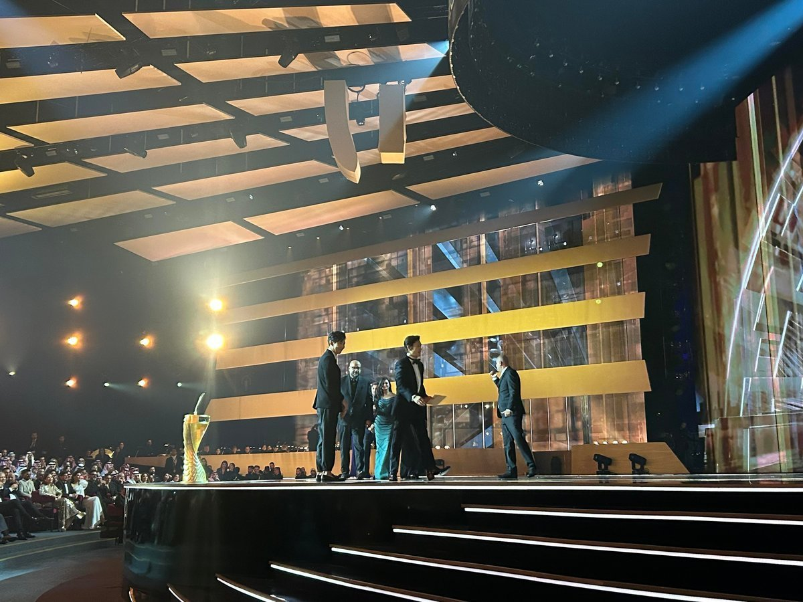
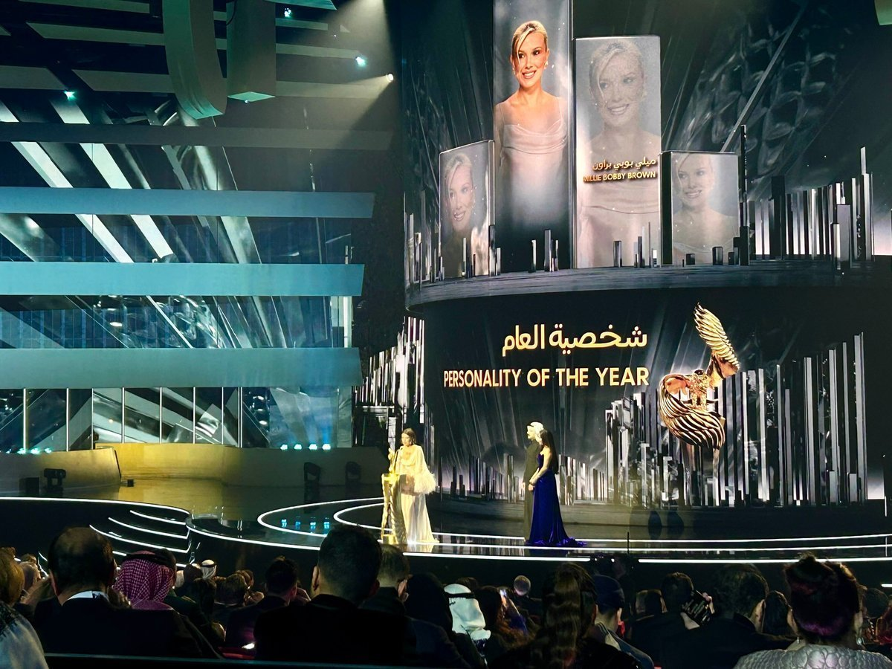
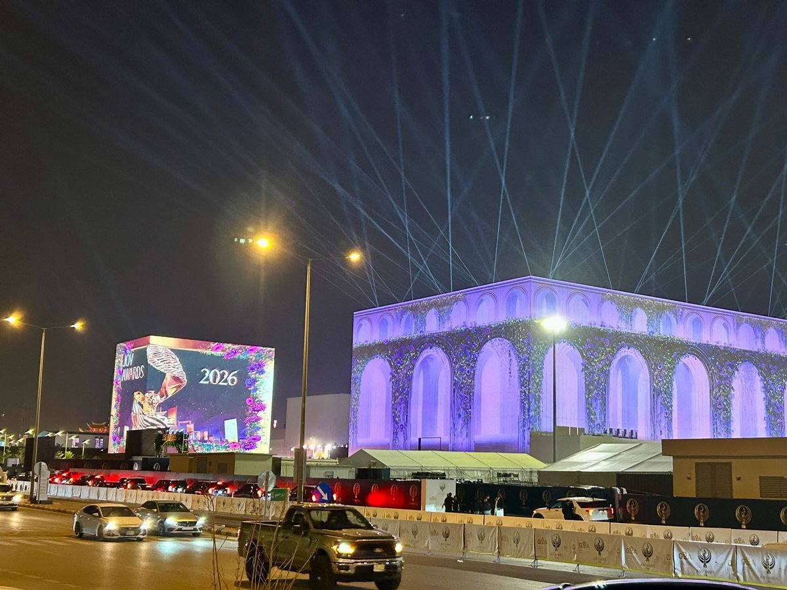

사우디아라비아 리야드 불레바드 시티 내 ANB 아레나(ANB Arena)에서 지난 1월 17일 조이 어워즈(Joy Awards)가 열렸다. 조이 어워즈는 사우디아라비아 정부 산하 사우디엔터테인먼트청(General Entertainment Authority, GEA)이 주관하는 대중문화 시상식으로, 영화·드라마·음악을 중심으로 스포츠를 포함한 다양한 분야를 아우르는 연례 행사다. 해당 시상식은 사우디아라비아 방송사 ≪엠비씨(MBC, Middle East Broadcasting Center)≫ 그룹 계열 채널과 온라인 플랫폼을 통해 생방송으로 중계됐다.
이집트 드라마 부문 시상자로 참여한 이병헌·이정재
올해 시상식에는 한국을 대표하는 배우 이병헌과 이정재가 공식 초청을 받아 참석했다. 두 배우는 이날 시상식에서 '페이보릿 이집션 시리즈(Favorite Egyptian Series)' 부문 시상자로 무대에 올랐다. 해당 부문은 이집트 드라마 콘텐츠를 대상으로 한 공식 시상 부문으로, 이병헌과 이정재는 함께 무대에 올라 수상작을 발표했다. 한국 배우가 중동 지역 드라마 부문 시상에 참여한 장면은 현장에서도 큰 주목을 받았다.

▲ 2026년 조이 어워즈(Joy Awards)에서 시상 중인 이병헌, 이정재 배우 — 출처: 통신원 촬영
할리우드 스타들이 함께한 국제 시상식
이번 조이 어워즈는 시상과 공연이 함께 구성된 대규모 행사로 진행됐다. 글로벌 팝 아티스트 케이티 페리(Katy Perry)를 비롯한 유명 가수들의 축하 공연이 이어졌으며, 다수의 할리우드 스타들도 시상자와 수상자로 참석했다. 글로벌 드라마 시리즈 〈기묘한 이야기(Stranger Things)〉에 출연한 밀리 보비 브라운(Millie Bobby Brown)은 '올해의 인물(Personality of the Year)' 부문 수상자로 선정돼 큰 박수를 받았다. 이 밖에도 다양한 국적의 배우와 제작진이 공식 프로그램에 참여하며 시상식이 진행되었다. 또한 사우디 및 중동 대중문화 전반에서 상징적 존재로 평가받는 인도영화계의 아이콘 샤 루크 칸(Shah Rukh Khan)의 참석과 더불어 한국 배우들과의 만남 역시 해외 언론의 주목을 받았다.

▲ '올해의 인물 부문'을 수상한 밀리 보비 브라운(Millie Bobby Brown) — 출처: 통신원 촬영
윤제균 감독 수상에 이어 이어지는 한국 영화인의 위상
한국 영화인에 대한 조명은 이번이 처음은 아니다. 조이 어워즈는 지난해 한국 상업 영화를 대표해 온 윤제균 감독에게 평생공로상(Life Achievement Award)을 수여한 바 있다. 작년 윤제균 감독의 수상에 이어 올해 이병헌·이정재 배우들이 시상자로 무대에 오른 모습은, 한국 영화인이 이 시상식에서 지속적인 존재감과 위상을 이어가고 있음을 보여준다.
▲ 2025년 조이 어워즈에서 평생공로상을 수상한 윤제균 감독 — 출처: 조이 어워즈 공식 페이스북 계정(@joyawards)

▲ 시상식이 열린 ANB 아레나 건물 전경 — 출처: 통신원 촬영
직접 현장을 찾은 관객의 시선에서 본 조이 어워즈는 대형 무대 연출과 안정적인 행사 운영이 인상적이었다. 수천 석 규모의 객석이 마련된 ANB 아레나에서는 레드 카펫 행사와 시상식, 공연이 차례로 진행되며 전반적인 운영의 안정성이 돋보였다. 이를 통해 조이 어워즈가 중동 지역을 대표하는 대중문화 행사로서의 위상을 갖추고 있음을 확인할 수 있었다.
사진출처 및 참고자료
통신원 제공
조이 어워즈(Joy Awards) 공식 웹사이트, joyawards.sa/en
조이 어워즈(Joy Awards) 공식 페이스북 계정(@joyawards), facebook.com
≪시네마 익스프레스(Cinema Express)≫ (2026. 01. 20). Shah Rukh Khan shares frame with Millie Bobby Brown and Lee Jung-jae at Joy Awards, cinemaexpress.com